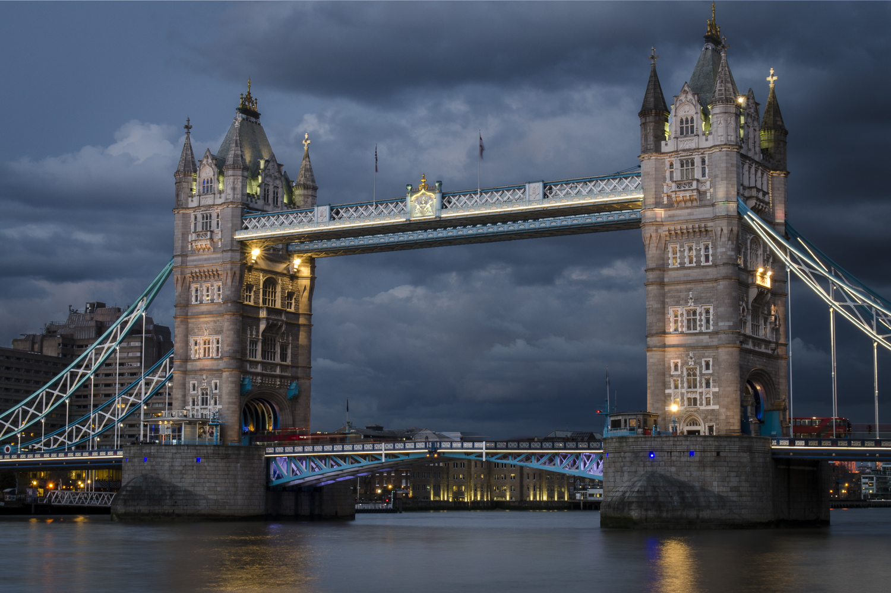
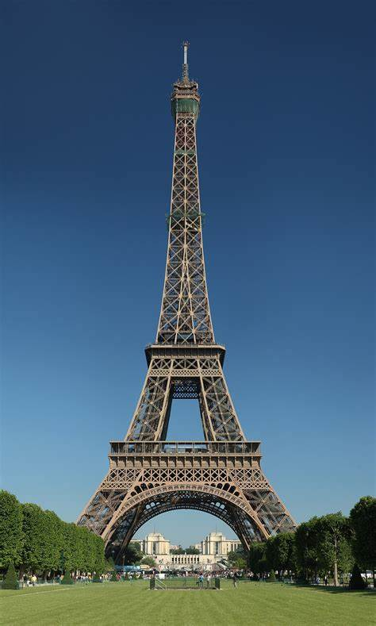
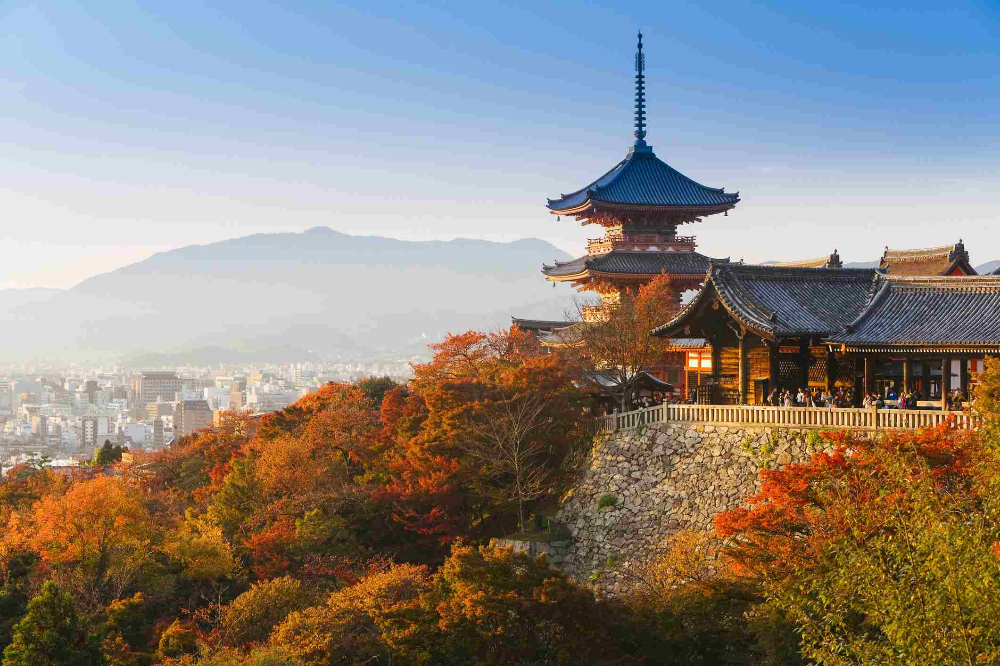

Travel
London, Tower Bridge
London Bridge is a historic and iconic bridge located over the River Thames in London, England. The current bridge, which opened to traffic in 1973, is a box girder bridge built from concrete and steel.
It replaced a 19th-century stone-arched bridge, which in turn superseded a 600-year-old stone-built medieval structure. Prior to these, there had been several timber bridges in the same location since the Roman period.
Photo Gallery


Likes
- London Night
- London Morning
Paris, Eiffel Tower
The Eiffel Tower, an iconic symbol of Paris, offers breathtaking views of the city. This 324-meter tall structure is an architectural marvel and a must-visit for anyone traveling to Paris. Whether you visit during the day or night, the experience is unforgettable.
Surrounding the tower is the Champ de Mars, a vast public greenspace, perfect for picnics and photo sessions with the tower in the backdrop.
Photo Gallery

Likes
- View from the top
- Evening lights show
- Nearby cafes and shops
Kyoto, Kinkaku-ji
Kyoto, the heart of Japan's culture, is a city where traditional meets modern. Famous for its numerous classical Buddhist temples, as well as gardens, imperial palaces, Shinto shrines, and traditional wooden houses. A must-visit is the Kinkaku-ji, the iconic Golden Pavilion.
During spring, the city is adorned with cherry blossoms, making it a picturesque destination. Don't miss the historic Gion district, known for its preserved streets and being the district of Geishas.
Photo Gallery
Highlights
- Cherry Blossom Season
- Visit to the Golden Pavilion
- Exploring Gion District